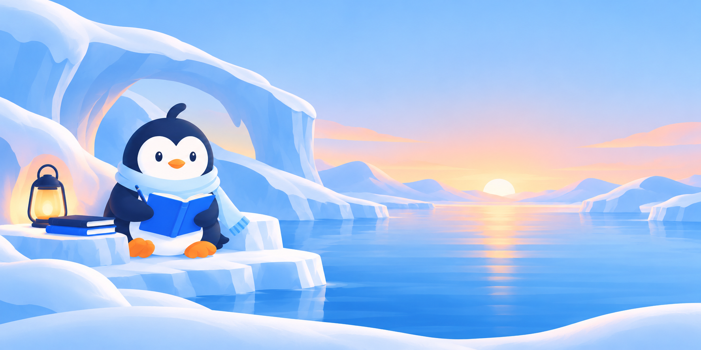
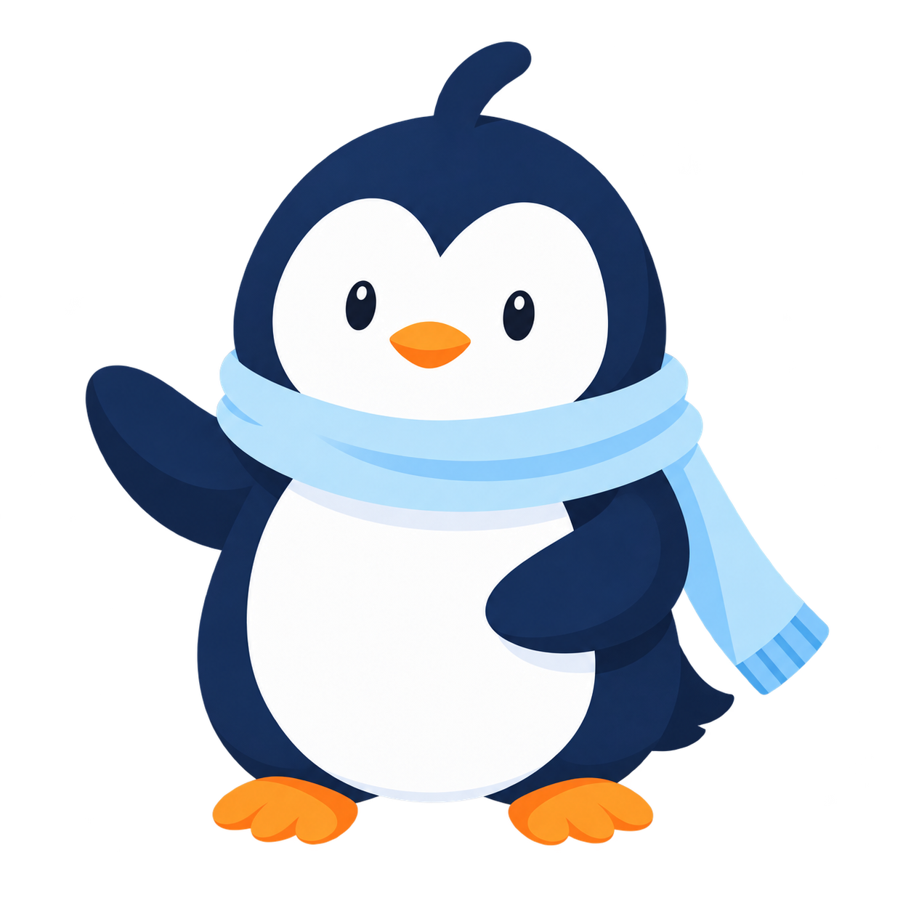

01 / Writing nook
A place to put things into words
Review the character, atmosphere and quiet space around the composition.
SceneWritingNookV1.pngArtwork and motion
New scene, character and icon candidates for CircleU. Explore the artwork at different sizes, then compare a short motion study with the still illustration.
Scene candidates shown in full. These are artwork studies, not implemented app screens.

Review the character, atmosphere and quiet space around the composition.
SceneWritingNookV1.png
A companion scene to consider alongside Today and Journal’s existing artwork.
ScenePracticeCoveV1.pngManual, finite whole-illustration tilts. These studies do not animate individual flippers or eyelids.
Motion plays only when you choose it. The system’s reduced-motion preference is always respected.

Ice surfaceA 560 ms whole-illustration tilt, returning to the original pose.
 Ice surfaceInk surface
Ice surfaceInk surfaceA 580 ms whole-illustration tilt. Writing and reading would remain still.
Both illustrations are still.
Actual 32, 48 and 96 CSS-pixel previews. Check shape clarity and transparent edges before choosing an app placement.
Does Pingu still feel like the same character? Do the icons read at 32 pixels? Does the still version feel complete? Compare the transparent artwork on both backgrounds.
An isolated artwork and browser-motion comparison. It does not change the SwiftUI app, demonstrate native accessibility, or approve a production placement. No content leaves this page.